UX / UI Design
Clear, accessible and well-structured digital experiences for web products, platforms and services. Deliverables such as wireframes, prototypes and audit reports.
I am Estela Gaspar, a lead product designer working across UX/UI, service design, design systems, user research, branding and signage. I help organisations shape experiences that feel clear, useful and visually distinctive.
My work spans digital journeys, live prototypes, GOV.UK and GDS-informed flows, interface design, brand identity, and physical communication such as signage and visual systems.

Clear, accessible and well-structured digital experiences for web products, platforms and services. Deliverables such as wireframes, prototypes and audit reports.

Design support for larger services that need consistency, systems thinking and structured collaboration.
Hands-on prototype work for teams that need ideas tested, connected and made tangible. Prototype journeys and clickable flows and GOV.UK Prototype Kit and Nunjucks-based page updates.
Distinctive visual communication for businesses, environments and printed or digital materials.
I have worked on complex journeys for Government services creating and editing pages, mapping journeys, selecting suitable GDS components and patterns, and updating prototypes linked to repositories and research findings.
Alongside digital product work, I also bring experience in branding, signage, web design, print, publishing and illustration.
That range is valuable for businesses that want one creative partner who can hold the bigger picture together.
Look at the business context, user needs, current pain points and what success should look like.
Shape the opportunity into a clear direction, whether that is a service problem, interface issue or visual communication need.
Create flows, pages, prototypes, systems or visual concepts that are practical, coherent and distinctive.
Review, improve and finalise so the work is ready to test, present, hand over or build.
I would love to hear about your project. Whether you need UX/UI support, live prototype help, service design input, branding or signage concepts, get in touch.